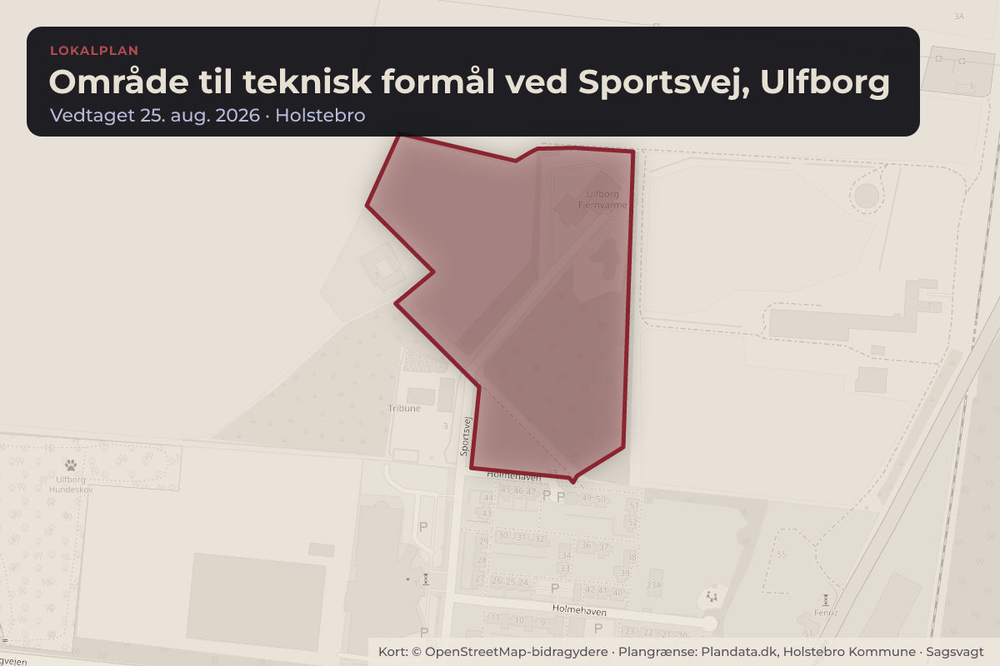
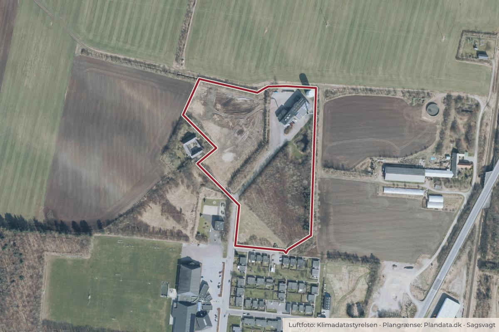

Besluttet 25. august, Byrådet, Holstebro
Endelig behandling af lokalplan nr. 1253, område til teknisk formål ved Sportsvej Ulfborg

Kort: © OpenStreetMap-bidragydere. Plangrænse: Plandata.dk, Holstebro Kommune.

Kort fortalt
- Hvem
- Byrådet, Holstebro Kommune
- Hvornår
- Tirsdag 25. august 2026
- Status
- Besluttet. Godkendt som indstillet. Historisk Beslutning fra Teknisk Udvalg, den 13. august 2026, punkt 2: Godkendt som indstillet.Beslutningen er forkortet her. Læs hele beslutningen
Er noget forkert her? Skriv til os
Læs hele sagen Kommunens egen tekst
Sagsfremstilling
AD/KLJL - TU - BY
Administration har udarbejdet et forslag til lokalplan nr. 1253 for et område til teknisk formål
ved Sportsvej, Ulfborg. Forslaget har været fremlagt i 4 ugers offentlig høring fra den 29. april
og frem til den 27. maj 2026 . Der er i høringsperioden ikke indkommet bemærkninger eller
indsigelser til lokalplanen. Forslaget er vedlagt dagsordenspunktet.
Lokalplanen er udarbejdet for at muliggøre de nødvendige bygninger og anlæg, herunder en
tank, som Ulfborg Fjernvarme ønsker at opføre i takt med, at fjernvarmeproduktionen i højere
grad overgår til el.
Da lokalplanen ikke er i overensstemmelse med Kommuneplan 2025 vedrørende
bebyggelsens højde, er der udarbejdet et kommuneplantillæg nr. 6. Tillægget supplerer den
maksimale bygningshøjde på 12 meter med en bestemmelse om, at tankanlæg kan gives en
højde på op til 20 meter, og at skorstene kan gives en højde på op til 30 meter. Øvrige
rammebestemmelser er uændrede. Samtidig reduceres rammens geografiske afgrænsning, så
den følger lokalplanområdets afgrænsning.
Forudsætningen for lokalplanens vedtagelse er derfor, at kommuneplantillægget også
vedtages.
Lokalplanområdet ligger ved Sportsvej nord for Ringvejen i Ulfborg og omfatter det
eksisterende fjernvarmeværk med tilhørende bygninger samt et grønt område, der fungerer
som bufferzone mod boligområdet syd for varmeværket. Fjernvarmeværket har i dag en
akkumuleringstank med en højde på ca. 20 meter.
En del af området er i dag omfattet af lokalplan nr. 27, som udlægger området til Ulfborg
Fjernvarmes eksisterende anlæg. Lokalplanen udvider området mod vest, hvor der udlægges
et nyt delområde til tekniske anlæg i forlængelse af det eksisterende delområde med samme
formål.
Med lokalplanen sikres mulighed for, at Ulfborg Fjernvarme kan opføre en elkedelbygning, en
akkumuleringstank og energioptagere.
Anlæggene placeres så langt fra nabobeboelsen som muligt og bag den eksisterende
beplantning for at reducere visuelle gener.
Administrationen vurderer, at lokalplan i sin nuværende form ikke er omfattet af krav om
udarbejdelse af en miljørapport i henhold til lovbekendtgørelse nr. 4 af 3. januar 2023 om
miljøvurdering af planer og programmer samt af konkrete projekter (VVM).
Indstilling
Teknisk Udvalg indstiller, at:
lokalplan nr. 1253 vedtages endeligt.
Beslutning
Godkendt som indstillet.
Historisk
Beslutning fra Teknisk Udvalg, den 13. august 2026, punkt 2:
Godkendt som indstillet.
Annette Dietz (F) deltog ikke ved sagens behandling.
Kilde: Holstebro Kommune, Byrådet, referat fra mødet tirsdag 25. august 2026, punkt 9. Læs den originale sag hos kommunen.